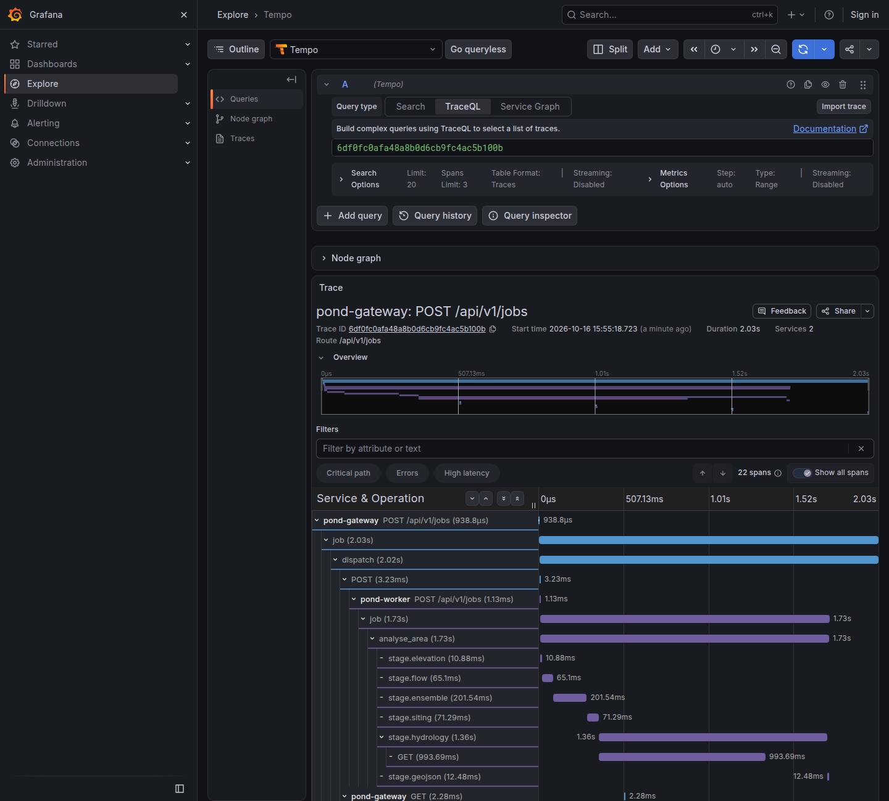
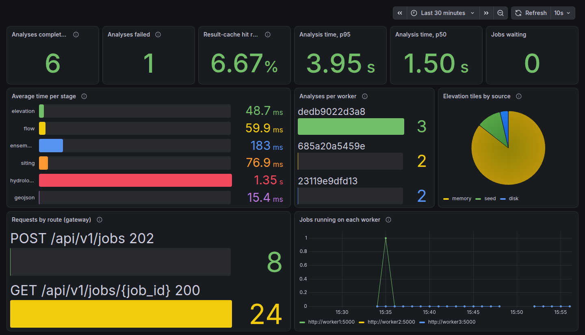
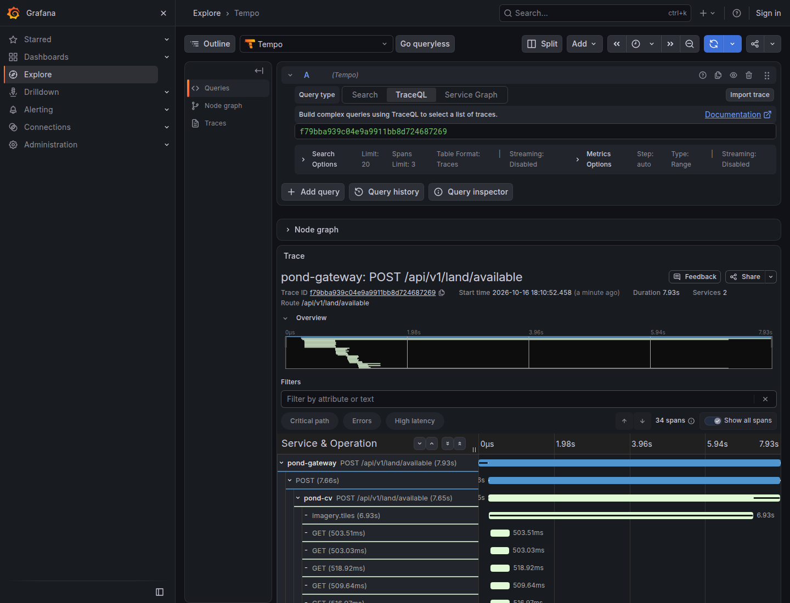

My pond planning system runs as seven containers. When an analysis is slow or fails, the cause can sit in any of them. Before this work I could only see the timing table that came back with a finished job. I added OpenTelemetry to the gateway, the three workers and the CV service. Every request now leaves a trace, a set of metrics and a set of log lines. Grafana shows all three. One trace follows a job from the gateway to a worker and down to the elevation and rainfall calls. The checks were simple. All 590 tests pass. The telemetry adds about 13 to 16 MiB of memory and no measurable time. Stopping the CV container does not stop a terrain analysis. The traces already found two real causes of delay: the rainfall request and one slow satellite tile.
The system helps a village choose a place to dig a pond. A user draws an area on a map. The system returns a pond site, its catchment and the water it can expect each year.
In earlier work I built the analysis and split it over several containers to fit the assignment's 512 MB limit. That split has a cost. A request now crosses a gateway, a worker and sometimes a separate imaging service. If it is slow, I need to know where the time went. If it fails, I need to know which part failed.
This report covers the observability work. It follows section 7.7 of my high-level design (HLD), which asks for health checks, metrics, dashboards and central logs on every container.
The assignment sets the deliverables and the HLD sets the design. Table 1 lists both and says where each one is met.
| Asked for | Source | How it is met |
|---|---|---|
| Complete source code | Assignment, deliverables | Instrumentation is in app/telemetry.py and a few lines in the files it touches. All in the repository. |
| Installation guide | Assignment, deliverables | New section "Watching it" in docs/INSTALL.md. |
| API documentation | Assignment, deliverables | No API route was added or changed. /health already existed. |
| Final technical report | Assignment, deliverables | This document. |
| Cite AI tool use in the report | Assignment, LLM policy | Section 10. |
| Health endpoints on every container | HLD 7.7 | Gateway, workers and CV service each answer /health. Docker health checks use it. Checked in section 6.4. |
| Metrics in Prometheus, shown in Grafana | HLD 7.7 | Seven custom metrics plus the HTTP metrics. Services push them over OTLP. Prometheus stores them. Grafana shows them. |
| Structured, central logs | HLD 7.7 | Logs go to Loki with level, source file, function, service name and trace id. |
| Degrade gracefully if the image service is down | HLD 7.7 | Tested in section 6.4. A terrain analysis still finishes. |
I used OpenTelemetry because it is one standard for all three signals. The code only calls the OpenTelemetry API. The API does nothing until the SDK is switched on. This keeps the tests and the Render deploy unchanged.
The SDK starts only when the variable OTEL_EXPORTER_OTLP_ENDPOINT is set. Docker compose sets it.
Nothing else does.
otel container. Grafana reads from all three stores.| Span | What it shows |
|---|---|
POST /api/v1/jobs and other routes | Each HTTP request. Added automatically. /health is left out because it is polled every 15 s. |
job, dispatch | The job on the gateway and its hand-off to a worker. Carries the job id, the worker and the final status. |
POST gateway to worker | The HTTP call. It carries a traceparent header, so the worker joins the same trace. |
job, analyse_area on the worker | The analysis. Carries the area type, grid size, site count and any error code. |
stage.elevation, flow, ensemble, siting, hydrology, geojson | One span per pipeline stage. Recorded even if the stage fails. |
GET (Open-Meteo, tiles) | Each outgoing web call, under the stage that made it. |
imagery.tiles | The satellite tile fetch in the CV service. |
| Name | Type | Labels and meaning |
|---|---|---|
pond.analyses | counter | Finished analyses. Label: outcome = ok or error. |
pond.analysis.duration | histogram | Seconds for one whole analysis. |
pond.stage.duration | histogram | Seconds per pipeline stage. Label: stage. |
pond.job.cache | counter | Result-cache lookups. Label: result = hit or miss. |
pond.tiles | counter | Elevation tiles by source: seed, memory, disk, network or missing. |
pond.jobs.queued | gauge | Jobs waiting for a worker. |
pond.worker.in_flight | gauge | Jobs running on each worker. |
http.server.*, http.client.* | auto | Requests by route, method and status. |
The two duration histograms use buckets from 0.05 s to 60 s. The default buckets are in milliseconds and would put every analysis in one bucket.
The standard Python logging module is connected to OpenTelemetry. The code logs when a job is queued, sent to a worker, finished or failed.
It also logs when the queue is full, when a worker drops, how elevation tiles were found, and when rainfall falls back to the default.
Each line carries the trace id and span id. That links a log line to the request that wrote it.
| File | Change |
|---|---|
app/telemetry.py (new) | Instruments, setup(), auto-instrumentation for FastAPI, httpx and urllib. |
app/pipeline.py | A span and a duration metric for each stage. |
app/routers/analyze.py | The analyse_area span, outcome counter and logs. |
app/jobs.py | Job and dispatch spans, cache counter, queue and worker gauges, logs. |
app/providers/elevation.py, rainfall.py, app/cv/imagery.py | Tile counters, logs, and trace context in worker threads. |
app/main.py, app/cv/service.py | One line each to start telemetry. |
docker-compose.yml, requirements.txt | The otel service and six pinned packages. |
deploy/grafana/, tools/generate_load.sh | The dashboard and a load script. |
POST /jobs.
The task copies the context when it is created. So the job span joins the request's trace even after the response is sent.docker compose up. All seven containers became healthy.tools/generate_load.sh. It sends eight requests: six different areas on the three workers, one repeat that hits the cache, and one area in open ocean that must fail.All 590 tests passed with telemetry off. The load run gave six finished jobs on three workers, one cache hit and one expected failure (no_site_found).
The cache hit used no worker and left no worker span. The failed job took about 1 s and its span carries the error code.

POST /api/v1/jobs, passes through job and dispatch,
crosses to the worker and then shows each pipeline stage. Under stage.hydrology the call to Open-Meteo took 994 ms. The trace has 22 spans and lasts 2.03 s.
| Stage | Average |
|---|---|
| elevation | 48.7 ms |
| flow | 59.9 ms |
| ensemble (catchment cross-check) | 183 ms |
| siting | 76.9 ms |
| hydrology | 1.35 s |
| geojson | 15.4 ms |
/land/available took 7.9 s. In its trace, 30 satellite tile requests ran in parallel and 29 of them finished in under 0.6 s.
One tile took 6.0 s. Without a trace I would have blamed the image code. I have not changed this. A shorter tile timeout with one retry is the likely fix.
imagery.tiles span lasts 6.93 s. The bars below it are the individual tile requests.
The trace has 34 spans and two services.I ran the same analysis 20 times, on five different areas, in one process. I did this twice with telemetry off and twice with it on. Rainfall was switched off so that the network did not add noise.
| Run | Median | 95th percentile | Peak memory |
|---|---|---|---|
| Off, run 1 | 308 ms | 437 ms | 159 MiB |
| On, run 1 | 320 ms | 441 ms | 175 MiB |
| Off, run 2 | 317 ms | 451 ms | 162 MiB |
| On, run 2 | 310 ms | 430 ms | 175 MiB |
The time differences go both ways, so they are noise. Memory is higher by 13 to 16 MiB. A worker has 512 MiB, and the earlier scaling test peaked at 276 MiB. There is room for the extra memory. One caution: in these runs the exporter could not reach a server, so the cost of actually sending data is not in the numbers. The live stack did run at about 2 s per analysis with export on.
I stopped the CV container and sent a normal terrain request through the gateway. The job finished in 2.7 s on worker 1. The terrain analysis does not need the imaging service, as the HLD intends. I then restarted the CV container and it became healthy in under 15 s.
The gateway, a worker and the CV service each returned {"status":"ok"} from /health.
A query for the worker's logs in Loki returned lines such as "analysis started: bbox area" and "analysis done in 2090 ms: 3 sites, 3 warnings". Each line has a level, the source file and function, the service name, the container id, a trace id and a span id.
otel image is about 2.7 GB and is outside the 512 MB limit. On the lab and on Render the endpoint is not set, so nothing is sent.admin / admin. That is fine on my machine and not fine on a shared server.The system can now explain itself. One trace shows where a request spent its time, across three kinds of service. The metrics show the health of the whole stack. The logs link back to the request that wrote them. The cost is small and the whole thing is off unless asked for. The first traces already pointed to two causes of delay that I had not seen before.
docker compose up -d --build
tools/generate_load.sh
# open http://localhost:3000 (admin / admin)
# Explore > Tempo one trace per request
# Explore > Loki {service_name="pond-worker"}
# Dashboards Pond Catchment - OpenTelemetry
The steps are also in docs/INSTALL.md, under "Watching it".
I used an AI assistant, Claude from Anthropic, on this work. It helped me write the instrumentation code, set up the Grafana stack and the dashboard, run the checks in this report and draft this report. It did not design the pond analysis itself, which was built earlier.
I ran the tests and the measurements on my own computer. The numbers in this report come from those runs. The code and the full history are in the repository.
Code and documentation: github.com/Akshats-git/Pond-Catchment-Analysis.
Main files for this work: app/telemetry.py, docker-compose.yml, deploy/grafana/pond-dashboard.json, tools/generate_load.sh, docs/INSTALL.md.